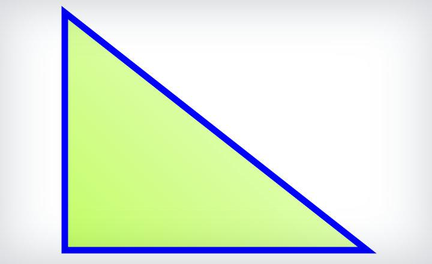

Tríngulo Escaleno

El triángulo escaleno o también denominado triángulo desigual, se caracteriza porque todos sus lados disponen de extensiones diferentes. En ningún triángulo de este tipo habrá dos ángulos que dispongan de la medida. Entonces en este ángulo no hay ni ángulos ni lados idénticos.
Pero dependiendo de la longitud, también es factible que nos encontremos con otros dos tipos de triángulos además del escaleno y ellos son como indicamos el triángulo equilátero, que se destaca porque sus tres lados son iguales asimismo como sus ángulos que tienen una medida de 60°.